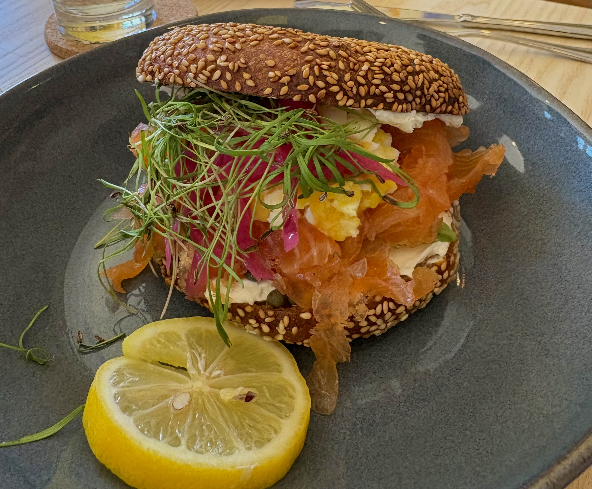
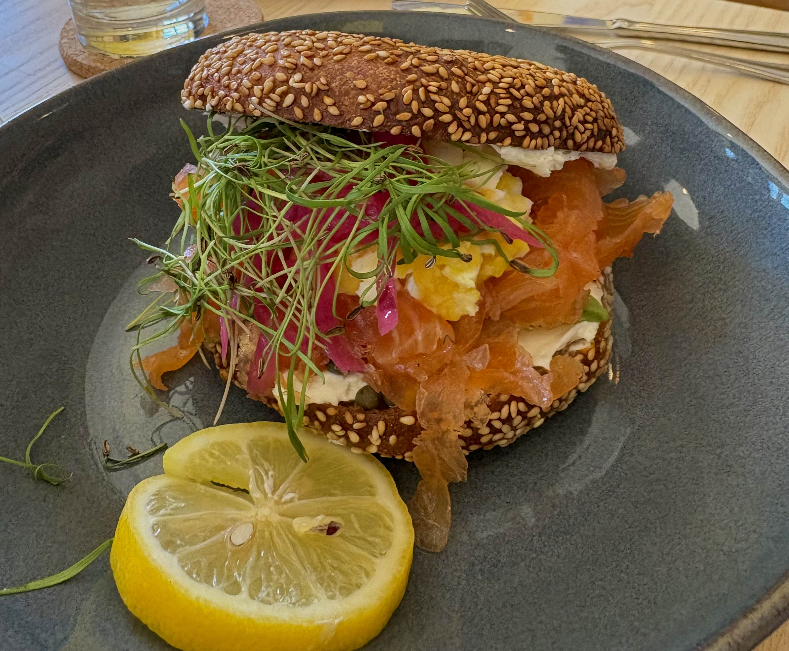

| Location |
3153 Morganford Ave. St. Louis, MO 63116 |
|---|---|
| Hours |
Daily 8am–2pm Closed Tuesdays |
| Reservations |
Book on Resy Call (314) 781-4344 |
 

The Combo Breakfast Sandwich | 14.00
Aged white cheddar on toasted sourdough with applewood smoked bacon and a fried farm egg. Topped with sea salt and local honey.
The Classic | 7.00
Aged white cheddar on toasted sourdough topped with sea salt and honey (optional). +$3 Fried Egg, +$5 Bacon
Sprouted Grain English Muffin Sandwich | 14.00
English muffin using flour from Lindley Mill. Served toasted with a turkey sausage patty from Buttonwood Farm, omelette-style egg, micros, and brown butter aioli.
Lox on a Sesame Seed Bialy | 16.00
House cured Scottish Salmon thinly sliced with cream cheese, capers, Bee Simple micro greens, pickled red onions, and sieved egg. Bialy is made in-house with sesame seeds.
Farm Toast | 14.00
Songbird’s French toast, soaked in egg custard and griddled with Henry Moore dent corn flour. Topped with seasonal fruit jam & malted whipped cream. +$2 Fried Egg, +$4 Shaved Ham
Breakfast Tamale | 14.00
Filled with cotija cheese, served with stewed black beans, shaved watermelon, cilantro crema, and a fried egg. Add Slagel Farm chorizo. (Vegan option available.)
Grassfed Beef Patty Melt | 16.00
Two beef patties, swiss cheese, 1000 island dressing on rye bread. Served with potato chips
Songbird Caesar Salad | 15.00
Romaine and mixed greens with bacon crumbles, smoked turkey breast, shaved parmesan cheese, pickled red onions, and house-made croutons in a miso vinaigrette
McKaskle Farm Cheddar Grits | 4.00
White corn grits from McKaskle Farm milled like polenta. Pairs well with any main dish.
Sugarwitch Yogurt Parfait | 7.50
Crafted by Sugarwitch for Songbird, our guilt-free breakfast sandwich features a yogurt parfait with plums and a granola crust. Fun & delicious!
English Muffin | 3.50
Toasted English Muffin made in-house with strawberry jam.
Sesame Seed Bialy | 5.50
A traditional Polish bialy, similar to a bagel but without the hole. Toasted with whipped cream cheese for a satisfying bite!
Chicken Sausage | 7.00
Three chicken sausage links from Buttonwood Farm. Patties on request.
Confluence Kombucha | 5.00
Lavender - Ginger kombucha from our neighbor at Confluence Kombucha. 7oz
Mighty Kind CBD Seltzer | 6.00
Made in St. Louis, MK is alcohol and sugar-free. Choose from Violet-Mango or Lemon, each with 20mg of organic CBD for calming effects.
Matcha Latte | 6.00
Warm or Iced with Kodemari or Sonogi Matcha.
Cold Brew Coffee (16o) | 7.00
Iced cold brew coffee, rotating origin from Blueprint coffee
Latte | 6.00
Espresso and steamed milk. Seasonal flavors available.
Chocolate Latte (Mocha) | 7.00
A classic chocolate latte made with Rolling Lawn chocolate milk.
Drip Coffee To Go | 5.00
Hot drip coffee to go. 10oz or 16oz available.
Season Shift Sunny Cat | 5.25
New England style IPA with tangerine notes, brewed in St. Louis MO
Mimosa | 10.00
Non vintage sparkling wine from Cava, Spain with your juice of orange, grapefruit, or pineapple juice from our neighbors at Hello Juice.
Latte with a Kick | 8.00
Classic latte with either Luxardo Amaretto or Tullamore Dew Irish Whiskey
Songbird T-shirt | 11.00
Soft, unisex shirt printed by Tiny Little Monster. Comfortable and pre-shrunk we hope it becomes your new favorite comfy shirt.
Songbird Gift Card | 10.00-100.00
Give the gift of Songbird! Our gift card is perfect for any occasion, letting your loved ones enjoy delicious meals at their convenience.